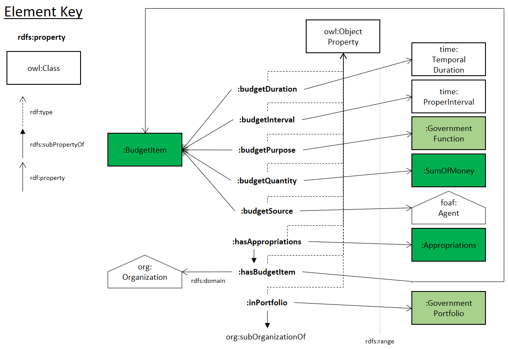

Abstract
This is an OWL ontology of the Australian Federal Government's Appropriations Framework that is maintained by the Australian Federal Government's Department of Finance.
It is not, yet, a comprehensive modelling of all of the concerns of the Appropriations Framework and certainly not of all issues relating to the Appropriations Framework, such as Portfolio Budget Statements.
It only addresses some aspects of the Appropriations Framework necessary to classify government Entities. This is due to the focus of the development of this ontology: to assist with the creation of a 'Longitudinal Spine' of government functions.
Classes
Figure 1: Appropriations Framework ontology Class diagram
Government Outcomec back to ToC or Class ToC
IRI: http://linked.data.gov.au/def/appf/Outcome
-
has super-classes
-
function
c
Government Programc back to ToC or Class ToC
IRI: http://linked.data.gov.au/def/appf/Program
-
has super-classes
-
function
c
Object Properties

Figure 2: Appropriations Framework ontology object properties
Annual appropriation budget (AUD)op back to ToC or Object Property ToC
IRI: http://linked.data.gov.au/def/appf/hasAppropriations
IRI: http://linked.data.gov.au/def/appf/budgetDuration
-
has domain
-
Budget item
c
-
has range
-
time temporal duration
c
IRI: http://linked.data.gov.au/def/appf/budgetInterval
-
has domain
-
Budget item
c
-
has range
-
time proper interval
c
IRI: http://linked.data.gov.au/def/appf/hasBudgetItem
IRI: http://linked.data.gov.au/def/appf/budgetPurpose
IRI: http://linked.data.gov.au/def/appf/budgetQuantity
IRI: http://linked.data.gov.au/def/appf/inPortfolio
IRI: http://linked.data.gov.au/def/appf/budgetSource
Data Properties
Figure 3: Appropriations Framework ontology datatype properties
IRI: http://linked.data.gov.au/def/appf/moneyAmount
IRI: http://linked.data.gov.au/def/appf/moneyCurrency
Namespace Declarations back to ToC
-
default namespace
-
http://linked.data.gov.au/def/appf#
-
2006
-
http://www.w3.org/2006/
-
about-government
-
https://www.australia.gov.au/about-government/
-
agrif
-
http://reference.data.gov.au/def/ont/agrif#
-
appf
-
http://linked.data.gov.au/def/appf/
-
dc
-
http://purl.org/dc/elements/1.1/
-
def
-
http://linked.data.gov.au/def/
-
foaf
-
http://xmlns.com/foaf/0.1/
-
orcid-org
-
https://orcid.org/
-
org
-
http://www.w3.org/ns/org#
-
owl
-
http://www.w3.org/2002/07/owl#
-
rdf
-
http://www.w3.org/1999/02/22-rdf-syntax-ns#
-
rdfs
-
http://www.w3.org/2000/01/rdf-schema#
-
skos
-
http://www.w3.org/2004/02/skos/core#
-
terms
-
http://purl.org/dc/terms/
-
time
-
http://www.w3.org/ns/time/
-
vann
-
http://purl.org/vocab/vann/
-
xsd
-
http://www.w3.org/2001/XMLSchema#
This HTML document was obtained by processing the OWL ontology source code through LODE 2, Live OWL Documentation Environment, v2, originally developed by Silvio Peroni and updated by Edmond Chuc at the CSIRO.
Sum of money in whole Australian Dollars